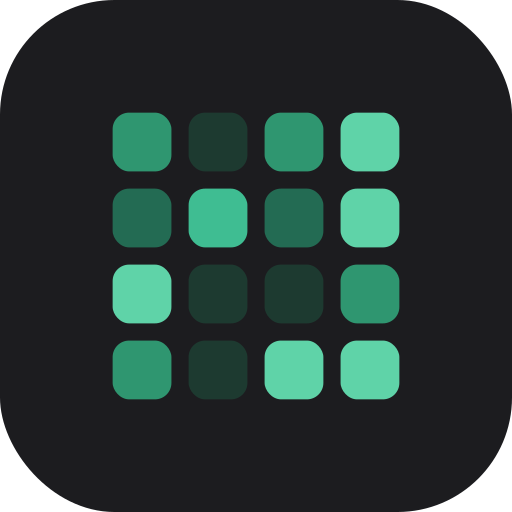
TimePixel계획은 누구나 세워요. TimePixel은 내 시간 예측이 얼마나 맞았는지 매일 데이터로 알려주는 코치, 그리고 크루와 같은 시각에 동시 인증하는 소셜 책임 앱이에요. Anyone can plan. TimePixel is a coach that shows you daily how accurate your time estimates really are — plus a crew that checks in together at the same moment, every day.
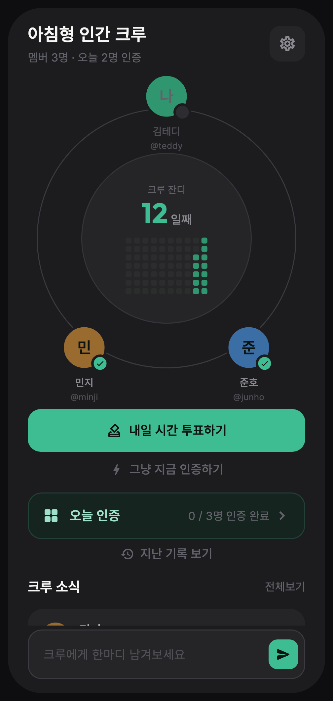
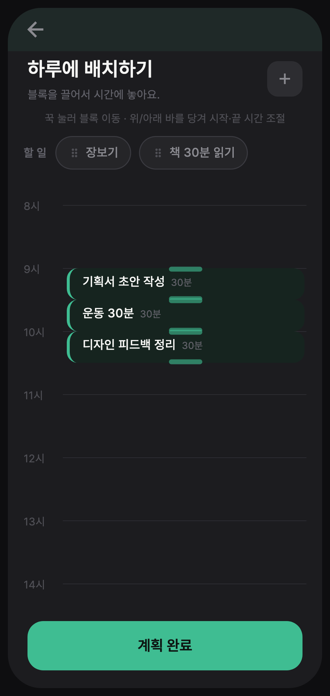
플래시카드 원리. 과거 평균을 먼저 보여주면 거기에 끌려가요(앵커링). TimePixel은 내가 먼저 추측한 뒤에야 데이터를 공개해서, 진짜 예측력이 자라게 해요. Like flashcards: seeing the answer first anchors you. TimePixel reveals your past average only after you guess — so your real time sense grows.
"30분이면 되겠지"가 매번 1시간이 되나요? 할 일마다 과거 기록이 자동으로 쌓이고, 추측 → 공개 → 보정 루프를 반복할수록 예측 정확도가 눈에 보이게 올라가요. Does "30 minutes, tops" always become an hour? TimePixel logs every task's history and runs a guess → reveal → adjust loop that visibly raises your prediction accuracy.
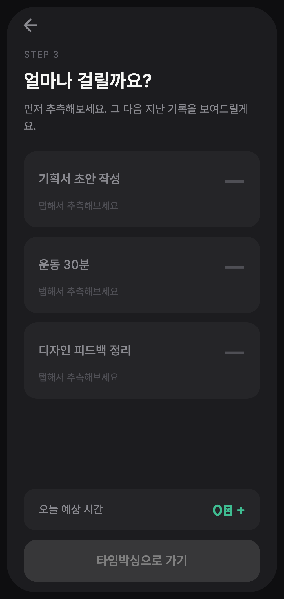
실제 시간 추정 화면 — 추측하기 전엔 "탭해서 추측해보세요"만 보여요. 탭해야 지난 기록이 공개돼요. The real estimate screen — before you guess, each card only says "tap to estimate." Your past record unlocks only after you do.
옆으로 넘기며 Brain Dump부터 크루 인증까지 실제 화면을 구경해보세요. Swipe through the real screens — from Brain Dump to crew check-in.
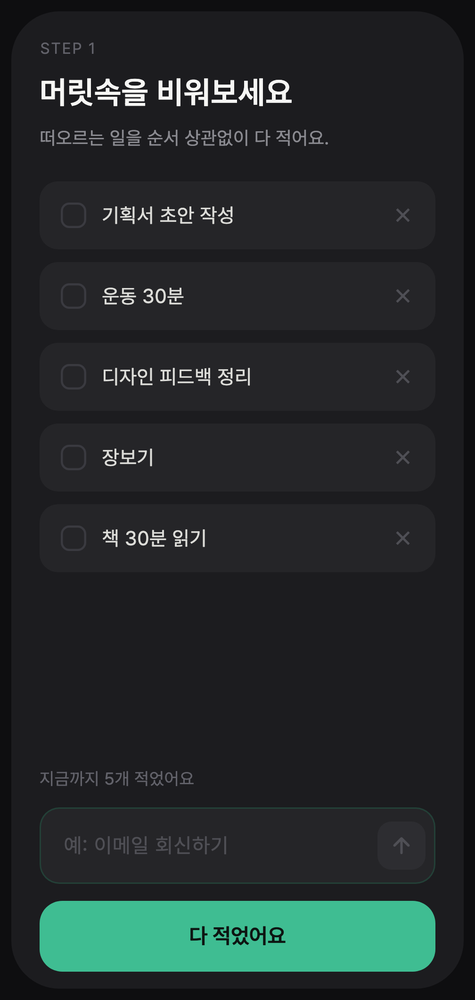
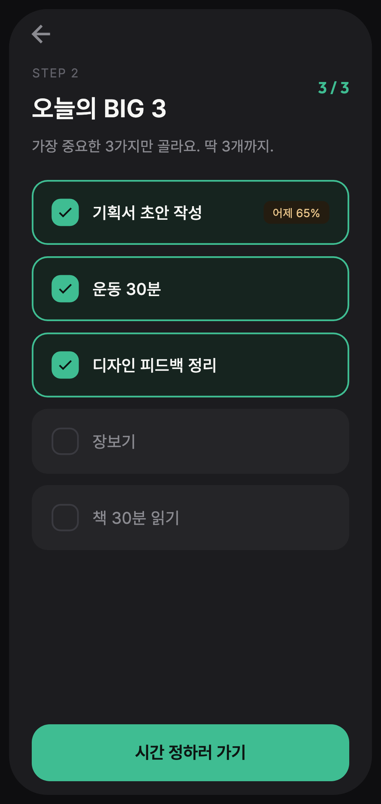
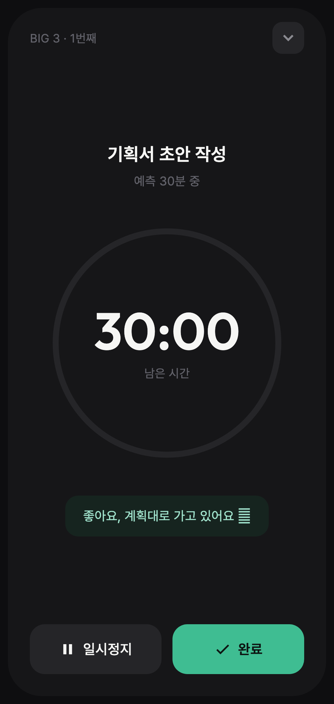
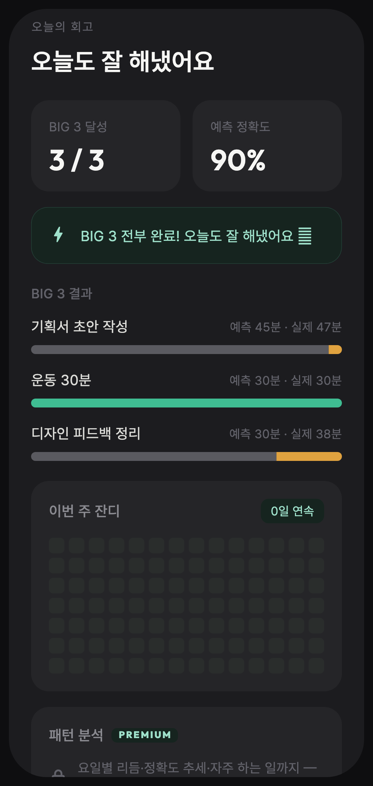
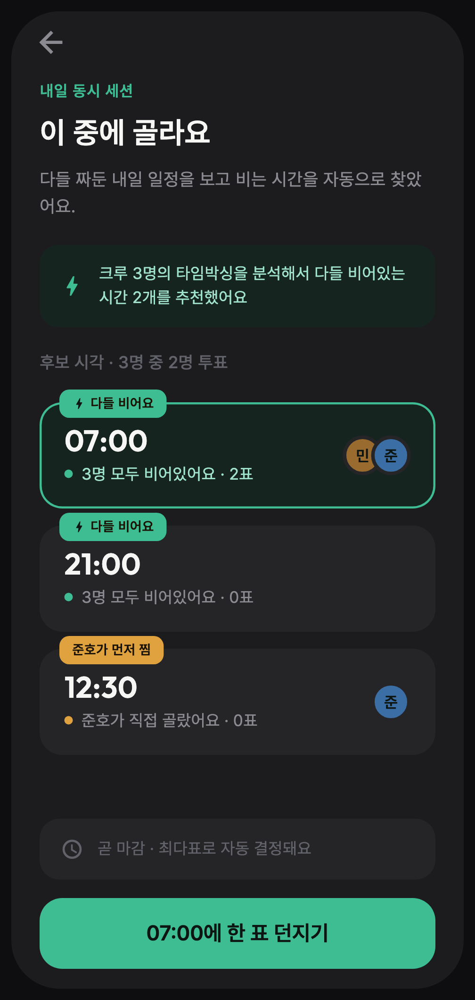
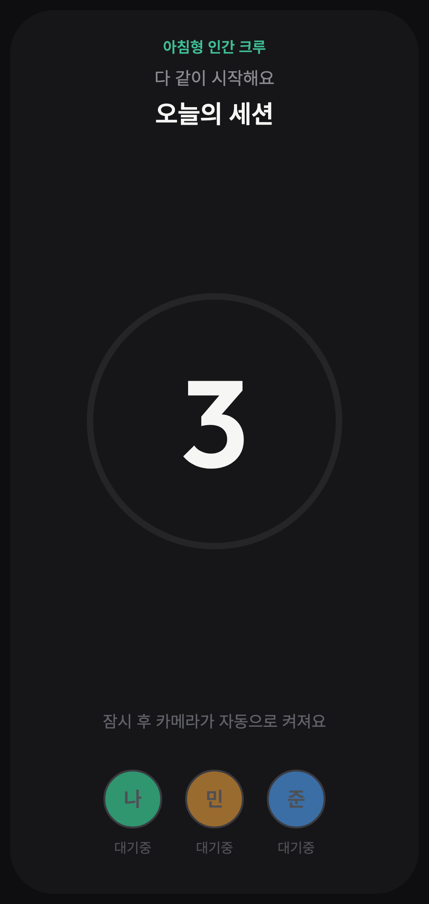
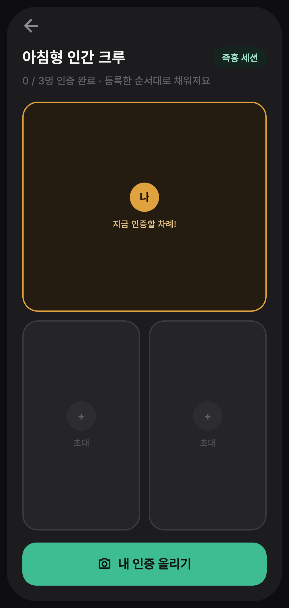
← 옆으로 스크롤 → ← scroll sideways →
계획을 세우는 사람 말고, 지키고 싶은 사람 Not for making plans — for keeping them